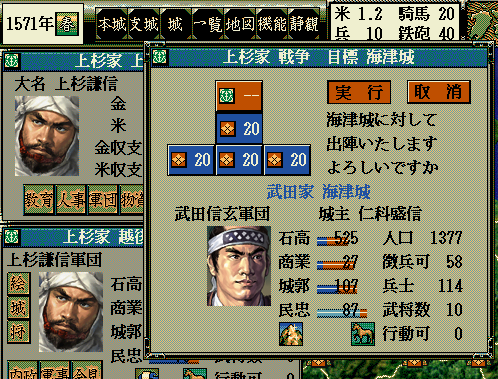

void カスタム::On_戦争開始(戦争開始パラメタ型 パラメタ) {
}

void カスタム::On_戦争開始(戦争開始パラメタ型 パラメタ) {
int iCastleID = パラメタ.城番号-1;
デバッグ出力 << "攻撃対象の城:" << Get_城名(iCastleID) << endl;
int iDefBushouID = パラメタ.守備側軍団長【武将番号】-1;
デバッグ出力 << "守備側の軍団長" << Get_名字(iDefBushouID)+Get_名前(iDefBushouID) << endl;
int iAtkBushouID = パラメタ.攻撃側軍団長【武将番号】-1;
デバッグ出力 << "守備側の軍団長" << Get_名字(iAtkBushouID)+Get_名前(iAtkBushouID) << endl;
}
int 武将戦闘熟練値リスト[最大数::武将情報::配列数];
void カスタム::On_戦争開始(戦争開始パラメタ型 パラメタ) {
// 戦争が始まる前に、武将全員分の戦闘熟練値をコピー
for ( int iBushouID=0; iBushouID < 最大数::武将情報::配列数; iBushouID++ ) {
武将戦闘熟練値リスト[iBushouID] = p武将情報[iBushouID].戦闘熟練値;
}
}
void カスタム::On_戦争終了() {
// 戦争終了時に戦闘熟練値を全部復元。
// 戦争によってアップした戦闘値はなかったことに。
for ( int iBushouID=0; iBushouID < 最大数::武将情報::配列数; iBushouID++ ) {
if ( p武将戸籍情報[iBushouID].状態 != 状態::死亡 ) {
p武将情報[iBushouID].戦闘熟練値 = 武将戦闘熟練値リスト[iBushouID];
}
}
}